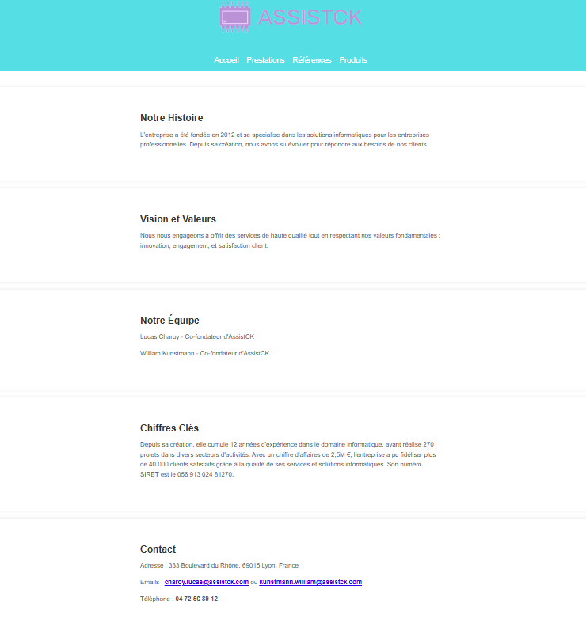
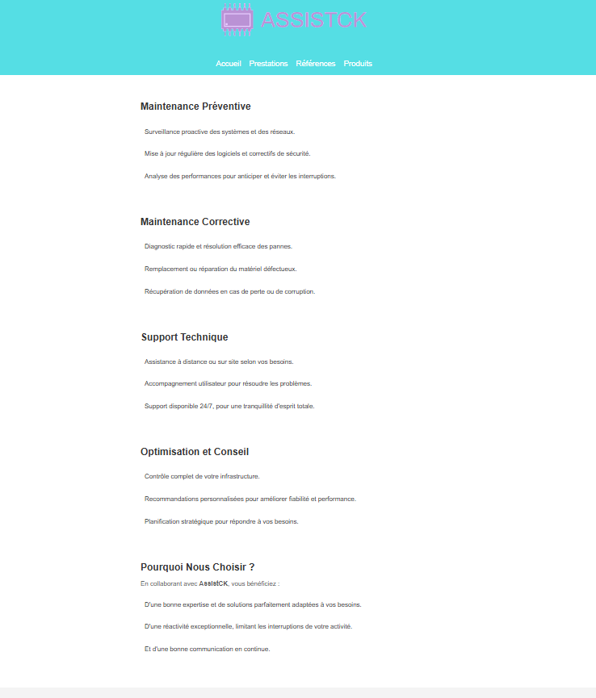
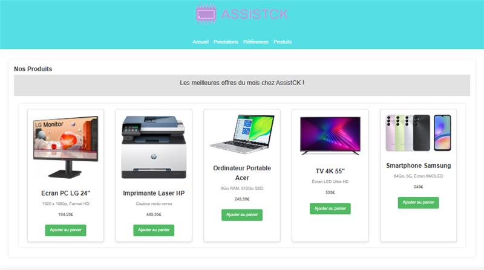

Projet : VPN + Chatbot
Competences première année
Html/css basics;C# ;PHP
Contexte : Creation chatbot + VPN
Objectifs : Créé un VPN équipé d'un chatbot a l'échelle du Campus
Équipe: William KUNSTMANN (étudiant) ; Lucas CHAROY (étudiant)
Travail réalisé : Installation d'une VM,et mise en place du VPN, installation d'un LLM pour l'entrainement du chatbot.
Outils : VM; interface LLM pour developement du chatbot
Résultats : Le VPN a fonctionné quelque minutes; le chatbot a été avorté pas assez developé pour etre déployer
Bilan : Le VPN était opérationel ; le chatbot a été avorté donc n'a pas été deployer
Projet : Appel d'offre
Competences première année
Html/css basics;Travail en mode projet; organiser son développement personnel; Gerer le patrimoine informatique
Contexte : Mr. Money, gérant et expert-comptable, recrute 4 nouveaux collaborateurs dans son équipe (3
salariés et 1 apprenti). Afin de les accueillir dans les meilleures conditions et d'optimiser la
productivité, il est nécessaire d'améliorer et de moderniser le parc informatique existant. Cela inclut
l'acquisition de nouveaux équipements ainsi que la mise en place de solutions et de services pour
faciliter l'échange, la sécurisation et le partage de documents
Money SARL va accueillir dans les 3 mois à venir :
• 2 comptables pour la saisie des informations comptables des clients.
• 1 assistant pour organiser la gestion client et la gestion administrative de
l’entreprise
• 1 apprenti à mi-temps pour seconder les comptables dans la collecte des
informations auprès des clients
Objectifs : Répondre aux besoin d'une organisation
Équipe: William KUNSTMANN (étudiant) ; Lucas CHAROY (étudiant)
Travail réalisé : Analyse des besoins de l'entreprise et élaboration d'une solution
Site web de l'entreprise fictive AssistCK crée dans le cadre du projet appek d'offre
Aperçu du site web
Page de présentation du site

Prestation du site

Prduits proposé par AssistCK
Outils : Visual Studio Code (site web de l'entreprise fictive AssistCK), Word, Google, Powerpoint
Résultats : Nous avons créé une entreprise fictive AssistCK puis aprés avoir analysé les besoins de l'entreprise, nous avons proposé une offre selon le contexte de l'appel d'offre
Bilan : le budget final de la solution proposé était de 2450€